Excel AddIn for Mesh User Guide
Introduction
Excel AddIn for Mesh is an add-in to Microsoft Excel and a part of the Smart Power portfolio. Excel AddIn for Mesh provides easy reporting to Microsoft Excel with the Mesh REST API from the Mesh service. It ensures a consistent use of the Mesh REST API and will make it easier to make new reports for the users. Updates/upgrades of the Smart Power software will contain tested versions of the Excel AddIn for Mesh.
Excel AddIn for Mesh includes two Excel workbooks: - FlexibleLoadStore - PowelAddIn
The FlexibleLoadStore workbook consists of 3 worksheets and the PowelAddIn workbook has the code in VBA (Visual Basic for Application).
The skeleton can be used as a starting point for a report or can be imported into an existing report and replace the existing use of TsApi in code and cell references. Excel AddIn for Mesh can also be used as input to the Mesh service and database.
The FlexibleLoadStore workbook has three worksheets:
- LoadFromDB
- Present
- SaveToDB
In the first worksheet the logon information and time series to load and present are specified. The second is used as an example for presentation and the last one is used to specify the time series to save. The first (LoadFromDB) and last (SaveToDB) will be described, the second is empty.
The PowelAddIn workbook has one sheet saying that this is an add-in to Microsoft Excel.
Prerequisites
- Excel AddIn for Mesh requires that Emulated TsApi for Mesh is installed.
- Emulated TsApi for Mesh supports both 64-bit and 32-bit clients like Microsoft Excel.
Functionality in Emulated TsApi for Mesh
The functionality is is limited and is intended for reading time series values from the Mesh server in an efficient and consistent way.
The following functionality exists:
- Read and write Mesh time series directly from and to the Mesh time series without any conversion of values, resolution or time zone (aka
getTVQRandsetTVQR) using the FlexibleLoadStore module. - Convert resolution when reading time series values from Mesh (aka
getTVQ). - Search for time series paths in Mesh.
- Access security based on user identity in Active Directory (Kerberos) or Entra ID.
Install Excel AddIn for Mesh
Excel AddIn for Mesh consists of two workbooks where one is a plain Excel workbook for configuring time series, and one is an Excel add-in.
Install on a shared disk
The PowelAddIn.xls workbook must be saved as an Excel add-in. To save a workbook as an add-in, open the workbook and choose File > Save as…. In the Save as dialog box, select Microsoft Excel Add-In (*.xlam) as Save as type.
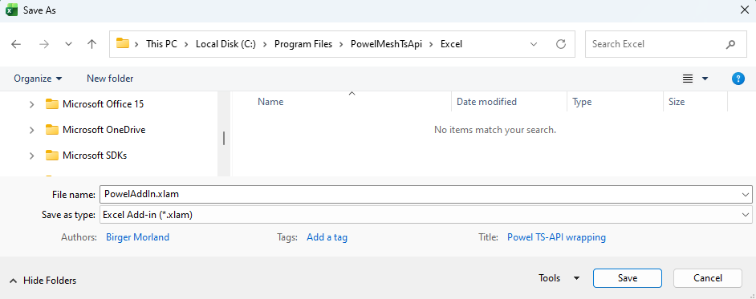
Excel will change to the directory where the Excel add-ins are stored. If you want to save it on a shared disk instead, navigate to the area where you want to store the add-in. Save and close the file.
To make use of the add-in, the add-in must be selected in the Tools > Add-Ins… menu in Excel. If Powel TsApi wrapping does not appear in the dialog box, choose Browse… and navigate to the shared disk where it is stored, select it and answer No to question if you want to copy the Add-In to your private directory.
Note! Some Excel versions do not accept text in the add-in workbook. If you get the error message ‘PowelAddIn.xla is not a valid add-in’, try deleting all text in the worksheet in PowelAddIn.xls and save it as an .xlam file once more.
Define TsApi or Emulated TsApi
You define whether to use TsApi or Emulated TsApi (Mesh or TSS) in the VBA code in PowelAddIn.xlam by defining the bDefTSS and bDefMesh variables:
- Use TsApi: bDefTSS = False and bDefMesh = False
- Use Emulated TsApi for TSS (default): bDefTSS = True and bDefMesh = False
- Use Emulated TsApi for Mesh: bDefTSS = False and bDefMesh = True
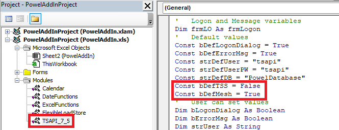
Note! Emulated TsApi for Mesh has also made changes to the Calendar and FlexibleLoadStore modules. Only limited functionality is supported, mainly related to reading and writing time series values.
Configure Emulated TsApi
Emulated TsApi includes the Close method. This method helps improve the performance when several clients run towards Mesh at the same time. The emulated TsApi configuration file contains two configuration keys, which ensure session integrity and efficient resource use.
You can edit these key values (in milliseconds):
<add key="KeepAliveIntervalInMsec" value="60000"/>
<add key="SessionsInactivityTimeLimitInMsec" value="300000"/>
KeepAliveIntervalInMsecdefines how often the client sends a "keep-alive" message to the service. It ensures that the service does not automatically disconnect an idle client.SessionsInactivityTimeLimitInMsecdefines how long an idle client session keeps its connection to the service.
After SessionsInactivityTimeLimitInMsec expires, the client disconnects from the service automatically. If the client attempts to call the service after that, automatic LogOn is performed with the last known credentials.
Note!
- At least one of
KeepAliveIntervalInMsec,SessionsInactivityTimeLimitInMsecshould be less than the service binding attribute.
Otherwise, the service may disconnect the client automatically with unpredictable consequences.
Install Excel AddIn for Mesh for each user
After the installation, each user must select the add-in in the Tools > Add-Ins… menu. If Powel TsApi wrapping does not appear in the dialog box, choose Browse… and navigate to the shared disk where it is stored, select it and answer No to question if you want to copy the add-in to your private directory.
If a user by mistake answers Yes to the question and has a private copy of Excel AddIn for Mesh, the user will not benefit from upgrades and error corrections. To change to the add-in on the shared disk:
- Deselect the Powel TsApi wrapping in the Tools > Add-Ins dialog box.
- Close Excel.
- Open Excel and open the Tools > Add-Ins dialog box.
- Choose Browse….
- Delete the private PowelAddIn.xla.
- Select the shared PowelAddIn.xla and answer No to the question to copy the add-in to the private area.
Upgrade Excel AddIn for Mesh
To upgrade the add-in to a newer version, you must ensure that nobody has Excel open with the Add-In Powel TsApi wrapping activated.
Note! Remember that you must deselect the add-in yourself, too.
Follow the procedure above for installing Excel AddIn for Mesh.
The LoadFromDB worksheet
This worksheet is used to configure logon information and retrieval of values from the Mesh service. The worksheet has 5 separate functions:
- Configure logon
- Configure status codes and colours
- Time series search
- Configure time series reportH
- Load data
In addition, there is a short description of use to the right of the time series report setup.
The layout looks like this:
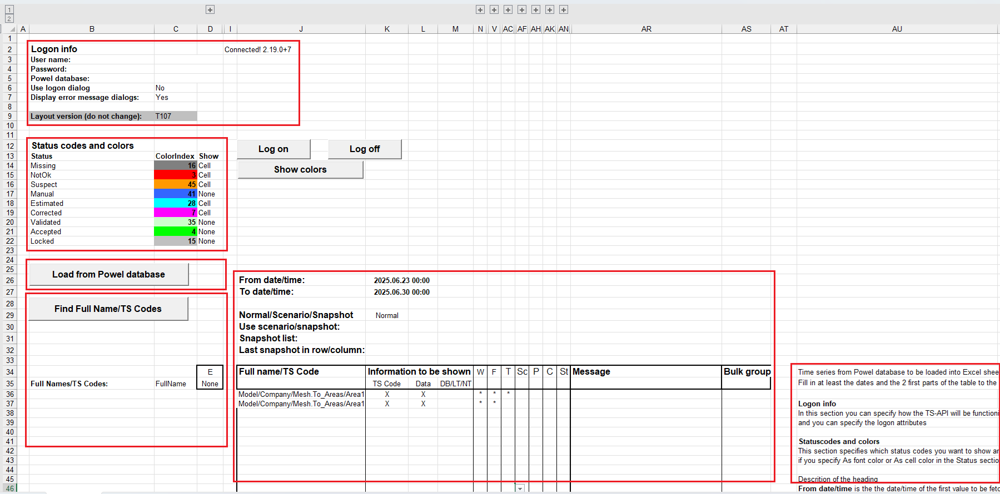
Configure logon
The logon setup looks like this:
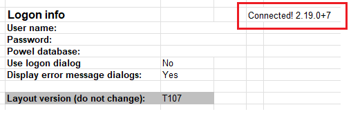
Note! the Layout version cell is used to ensure that the correct parts of the TsApi are used. Do not change the value, if you do, the code behind can give unwanted results.
Note! For bulk functionality, Layout version must be "T107".
The fields User name, Password and Powel database are not used when connecting to Mesh. In this case, the logged-in user (for Active Directory) or the authenticated user (for Entra ID) is used for authentication.
If you are connecting to an SmG database, you can also specify whether you want a logon dialog box to appear or not. The logon dialog box will show the User name, Password (as stars) and Database you enter here. If you do not want a logon dialog box User name, Password and Database must be specified here.
The result of the logon is shown in the worksheet as the connection string. The connection string is placed in a named cell: LogonStr. This name can be used in any other worksheet to show the logon status.
The last configuration parameter specifies whether a message box will be shown if any error occurs or not.
When the logon setup is done, this part of the worksheet can be expanded/collapsed by pressing the +/- in the left margin.
Configure status codes and colours
The Status codes and colours setup looks like this:
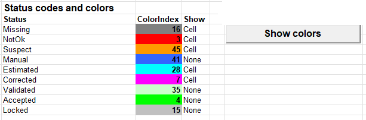
All the possible status codes are listed and in the column ColorIndex you can specify an index of the colour palette for Excel (value from 0 to 56, 0 is the default which is no background colour and black font). Choose Show colors and the colours will be shown as background colours.
In the Show column you can specify how each status will be shown in the presentation if you choose As color in the status part (see the Status part later on). The possible values in the Show column are: - Cell: The background colour is set to the selected colour - Font: The font colour is set - None: The status will not be presented at all
Time series search
The time series search part looks like this:
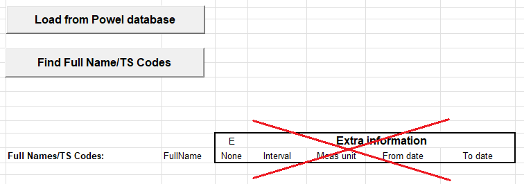
When choosing Find Full Name/TS Codes, a search dialog box is shown:
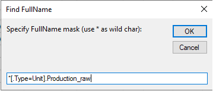
Type the search mask. The search mask is case sensitive and must follow the Mesh search expression rules, which are the same as in for instance Nimbus searches. (The search mask shown will get the Production_raw time series attributes on all items of type Unit in the physical Mesh model.)
Note! Excel AddIn for Mesh only supports searches on time series attributes.
Each time you perform a search, the information area for the search is cleared. The result of the search is shown below the button:
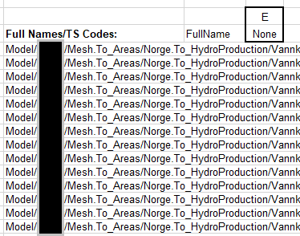
Time series report setup
Time series report setup allows you to specify time series from the Mesh service and where, what, how and which period to present.
The report setup has a heading where a period and type of report can be specified and a detailed part where each time series is specified. For each time series there are 10 sections of information, each one will be described.
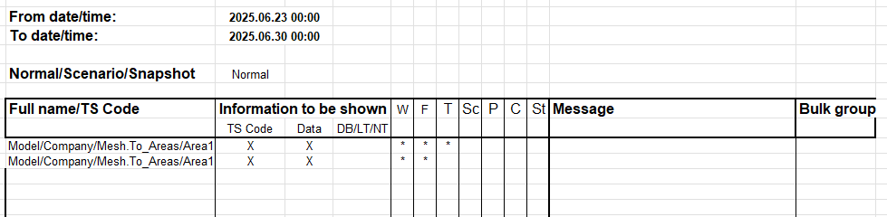
From date/time gives the starting point of the period, and To date/time specifies the end time. The From date/time is including the time specified, but the To date/time is up to but not including. This means that the example above specifies seven days of values.
Note! In the detailed part there are three values that must be filled in: - Full name/TS Code - Information to be shown - Where to store
The other parts are used to refine the presentation.
Full name/TS Code
The detailed part starts with the time series Full name/TS Code. The result from the time series search is used as a pick list for the cell or you can just copy the paths from the returned list (or somewhere else).
Note! The first blank time series Full name/TS Code stops the loading of data. If you for some reason want a ‘blank line’, type a * or another character.
Information to be shown
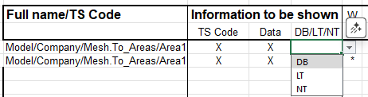
Enter X in the Data column if the time series is to be shown. If the Data column is blank, the information in Full Name/TS Code is ignored. The X in the Data column can be a user defined code to get time series loaded in different actions. (For details, see: Hide the worksheets LoadFromDB and SaveToDB.)
Enter X in the TS Code column to get the Full name/TS Code presented. The name/code is presented over or to the left of the data depending on the direction in which the data is presented.
The column DB/LT/NT is a drop-down box where you can select the time zone used when presenting the data. - LT: Local time - NT: Standard time - DB: Database time
The default value is DB.
Note! Due to the way values are stored on time series with resolution day, week, month and year, the selection in DB/LT/NT is overridden and set to NT.
Show date/time
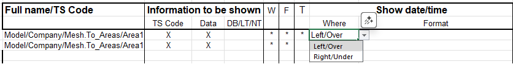
Select a value in the drop-down in the Where column to present the date/time for each value:
- Left/Over
- Right/Under
If the column is blank, the date/time will not be presented. The date/time will follow the selection in DB/LT/NT.
In the Format column you can specify the format of the date/time:
%Y- Year with 4 digits (ex: 1992)%2Y- Year with 2 digits (ex: 92)%y- Year related to week number with 4 digits.%2y- Year related to week number with 2 digits.%M- Month (1-12)%W- Week number (1-53)%D- Day in month (1-31)%w- Weekday (1-7)%h- Hour (0-23)%H- Hour-number (1-24)%m- Minute (0-59)%s- Second (0-59)$Mor#M- Month presented by name (ex. January)$wor#w- Weekday presented by name (ex. Monday)
Examples:
$w %D $M %Y kl.%02h:%02m- Sunday 17 May 1992 kl.12:30Week %W %y- Week 20 1992%2Y-%02M-%02D- 92-05-17$.3w %02D/%02M- Sun 17/05
If the Format column is blank, the date/time returned from the database is presented as is.
The T column will display an ____ if there is valid information in Where and Format columns. If there is information in the Format column but not in the Where column, the column will display an !*.
Different period (LoadFromDB)
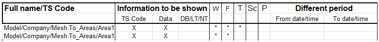
If you wish to display information from a different period than specified in the From date/time and To date/time columns in the heading, you can fill in a period here. If there is information in this part, the date/time from here will be used instead of the period in the heading.
There are several functions available to be used here (or in the heading). These functions take a date as the parameter:
startOfWeek- Date of the last MondayendOfWeek- Date of the next MondaystartOfFirstWeek- Date of Monday in week 1endOfLastWeek- Date of Monday in week 1 next yearstartOfMonth- First date in the monthendOfMonth- First date in the next monthstartOfYear- January 1. of the yearendOfYear- January 1. of the next yearclearHMS- set the hh:mm:ss part of the date to 00:00:00
These functions take a year and week/month number as the parameters:
startOfWeekNo- Date of Monday in given year/weekendOfWeekNo- Date of next Monday in given year/weekstartOfMonthNo- Date of the first day in given year/monthendOfMonthNo- Date of the first day of the next month of the given year/month
This function takes a year, month and day number as the parameters:
dateYMD- Date of given year/month/day
Example of call formula:
- =startOfWeek(FromDate)
- =startOfWeekNo(1999,20)
- =dateYMD(1999,3,31)
Remember that Excel can calculate with dates. The From date/time in the heading is a named cell: FromDate. Last week can be calculated as =FromDate – 7.
The P column will display an ____ if there is valid information in the two dates. If there is information in one date and blank the other one column will display an !*.
Comments
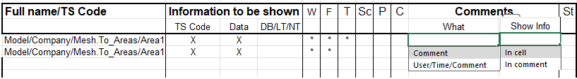
If you want to display comments stored with the time series, select What to display and where to Show Info.
You can select to display only the comment or the comment together with the user who entered it and the time it was entered. The comment can be shown as an Excel comment (red triangle in upper right corner) or in the cell to the right of or under the value.
The C column will display an * if there is valid information.
Status codes
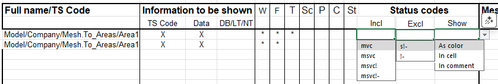
If you want to be specific about which values that are returned based on status codes, the Status codes part allows you to specify which status codes to be included as values and which status codes are excluded and will be returned as -1,#IND/-1.#IND and displayed as blank.
In the Show column, you specify how the status values can be displayed:
- As color: Background colour/font colour is selected in the Status codes and colours setup
- In cell: In the cell to the right of or under the value.
- In comment: As Excel comment (concatenated with any comments)
The status codes to be marked is configured in the Status codes and colours setup section.
The status codes are:
m- manualv- validatedc- correcteds- suspect!- not OK-- missing
Default handling is exclude !- (! not OK, - missing).
The column St will display an * if there is valid information.
Where to store
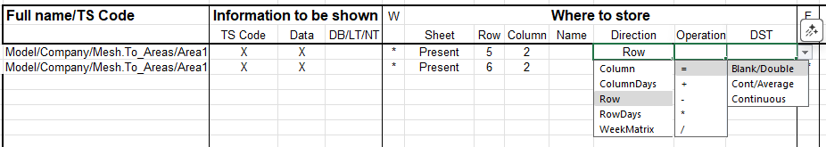
The Where to store part must be filled in to specify where the data are stored in the workbook. In the Sheet column you must fill in the worksheet where the presentation should be presented.
The Row/Column/Name columns specify which cell the presentation should start in, and the Direction column specifies how the data should be presented. Possible values are: - Column - one column - ColumnDays - one column per day - Row - one row - RowDays - one row per day - WeekMatrix - a week matrix (one column per day).
In the Name column you can specify a named Excel range. The Row, Column and Name columns are alternatives to specifying the start cell. The Row and Column values are only used if Name is not specified.
The Direction column also determines if information like Full name/TS code, Date/time, Comments and Status will be shown to the left/right of the values (Direction = Column) or over/under the value (Direction = Row).
The Operation column is used to do calculations with the already existing information in a cell. If a time series is presented at the same location as another time series, the first time series will be overwritten if there is no Operation specified. If you specify +, the new value will be added to the value already in the cell.
Note! If you specify a + operation for one time series alone, the time series will be added to itself each time you load a time series.
The DST column is used when data is presented in local time. Select one of the values: - Continuous: Present the time series with continuous values even in the transition days. - Blank/Double: Present the data with an empty hour in the spring and double value in the autumn. This is special useful for week presentations. - Cont/Average: Present data continuously based on the average of the values before/after transition.
Note! Operation other than =, + or blank together with DST Blank/Double will not work for the double hour in the autumn.
The column W will contain !! if there is no information given for time series that should be presented, an ! if there are missing values and an * if valid information is provided.
Data function
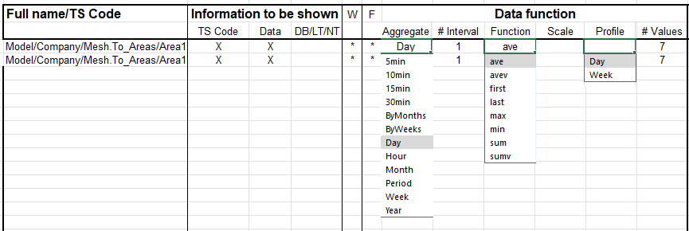
The Data function part can be used to specify aggregation of values to a longer period that the interval on the time series or distribution of values to a shorter period (Aggregate). The Function to be used is important if you specify a different period that the interval of the time series.
Note! Breakpoint time series without specified aggregation will be presented as stored.
The aggregation ByWeeks and ByMonths will report on week/month boundary. Typically, you select this to ensure reporting on a period where you want data on weeks/months but the first and/or last interval is not a full week/month. The aggregation Period ensures that there is only presented one value and the value can be aggregated for any period. The # Interval column is used to aggregate on a multiple of the Aggregate specified (or the interval on the time series). If not specified, # Interval is set to 1.
The Function specifies how to aggregate/distribute values to a different aggregation period. The default function used is first.
The difference between avev/sumv and ave/sum is that the first two functions use the values found on the time series to make an average/sum and the two last functions makes an integral under the function the values described and then makes an average/sum.
The interval of the answer is also different: the avev/sumv use the interval of the aggregation level and the ave/sum use seconds as the interval.
In the Scale column you can specify any factor to scale the read values before presenting them. For instence useful for presenting kWh from a MWh time series.
In the Profile column you can specify if the time series should be used to generate a profile based on the values selected. The profile can be calculated as a Day profile (24 hours) with 15 minutes or hourly resolution or as a Week profile with 15 minutes, hourly or daily resolution. The resolution is given in the Aggregate column. Each time step is calculated as an average based on the selected values.
The last column is useful to ensure that the data area is blanked before new values are presented. The value specified in # Values defines how many cells that will be blanked before the presentation is done.
The F column will display an * if there is any valid information specified.
Bulk group
To read series by bulk, the series must be located together in the Excel-sheet and belong to the same bulk group (the same value in the column Bulk group). Layout version must be T107 and Emulated TsApi (TSS) must be used. Every time series in a bulk group must have the same interval type and same period. The first row with a value in the Show date/time, Data function, Different period, Comments or Status codes columns must have a new group. If using bulk, all series should have bulk. If not, the result of the read can fail.
Message (LoadFromDB)
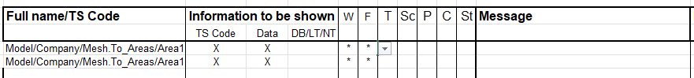
If there are any problems when loading data or inconsistent selection in the different specification parts, a Message with an explanation will be displayed here. If everything is OK when loading, the message part will be blank.
Load data
To load data from the database, choose Load from Powel database. If there are any problems with the database or the times series and selections, a message will be shown in the Message part.
Note! The first blank time series in Full name/TSCode stops the loading of data. If you for some reason want a ‘blank line’, type a * or another character.
The following setup (layout from an earlier version):
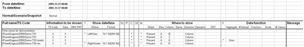
will result in the following report:
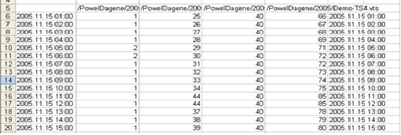
The SaveToDB worksheet
This worksheet is used to configure all saving of values to the Mesh service and database. The worksheet has 2 separate functions:
- Time series save setup
- Save data
In addition, there is a short usage description to the right of the time series report setup.
The layout looks like this:
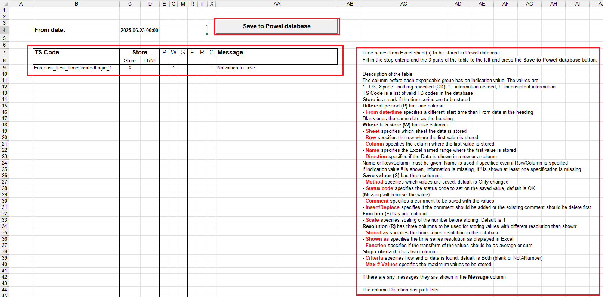
Time series save setup
The worksheet has the same principles as the LoadFromDB worksheet. There is a heading where the From date/time is specified and a detailed section with 7 parts to specify time series and what to save. The TS Code, Store and Where it is stored parts must be specified, the other parts are refinements.
TS Code
The TS Code part uses the same pick list as in the LoadFromDB worksheet, but you can copy the list from the LoadFromDB worksheet or from anywhere else.
Store
The first column is used to specify which of the time series to store. The mark can be a user defined code to save time series in different actions. For details about how to do different actions, see Hide the worksheets LoadFromDB and SaveToDB.
In the LT/NT column you can specify if the date/time is given in local or standard/normal time.
Different period (SaveToDB)
If you want a different From date/time, specify it in this column. Values in this column will be used instead of the values in the heading.
The P column will display an * if there is valid information here.
Where to store
This part is the same as the Where to store part in the LoadFromDB worksheet, Where to store. The only difference is that the saving of values expects that data are saved as Continuous for DST. If you present data with DST specified as Blank/Double, the save will stop on the missing hour in the spring or at the 25th hour in the autumn.
The column W will contain !! if there is no information given for time series that should be saved, an ! if there are missing values and an * if valid information is given.
Save values
In the Save values part you can decide which values that will be saved (All or Only changed) and set the Status of the value in the database. The default values are that Only changed values are saved with OK status.
In addition, you can specify a comment to be saved together with the values. The comment is stored for the whole period and not for each hour that is saved. When saving comments, you can decide if the last comment should be added (Insert) to existing comments or the last should replace all comments in the given period.
The status codes are:
- Accepted
- Locked
- Manual
- Missing
- OK
- M&A (Manual and Accepted)
- M&L (Manual and Locked)
- A&L (Accepted and Locked)
- M&A&L (Manual, Accepted and Locked)
If you set Locked status on a value, you cannot unlock the value from the FlexibleLoadStore.xls (unavailable in the TsApi).
If you set Missing status on a value, the value is treated as not existing in the system.
The S column will display an ____ if there is any information given in Method and/or Status code*.
Function
In the Function part you can specify a Scale factor that will be used when storing values. The default value is 1.
The F column will display an * if there is specified any scale factor.
Resolution
In the Resolution part it is possible to specify that values should be stored with a different resolution than shown. Especially when saving breakpoint time this part is of interest. You can skip this part if no transformation between resolutions is needed.
The Stored as column must have the same resolution as the time series. Only bp (breakpoint) and 15min are allowed values.
The Shown as column specifies the interval between the values in the Excel sheet. For time series with 15 minutes resolution, only 15min, 30min and Hour are allowed, for breakpoint time series all other options are allowed.
The Function part contains the function to be used when transforming values before saving. With the ave (average) function the same value is stored in all sub-values (storing an hour series in 15 minutes resolution will give 4 sub-values per value). With the sum function the sub-values will be the same values but the sum of them will the original value. The default value is sum.
The R column will display an ____ in there are values in all three columns, a blank if no values are specified and an !* otherwise.
Criteria
In this part you define when to stop reading values to save. The possibilities are Blank (stops with the first blank cell), NotANumber (will accept blank cells, but stops at the first text cell) or Both (stops with the first blank or text cell). The default value is Both.
In addition, you can specify a maximum number of values that will be read from Excel.
The C column displays an * if there is selected a stop criterion.
Message (SaveToDB)
The Message part displays the result of the save or any problems with the time series or database.
Save data
To save data to the database, choose Save to Powel database. If there are any problems with the database or the times series and selections, the message will be shown in the Message part.
Note! The first blank time series TS Code stops the saving of data. If you for some reason want a ‘blank line’, type a * or another character.
Hide the worksheets LoadFromDB and SaveToDB
After the LoadFromDB and SaveToDB worksheets are configured and tested, it may be convenient to hide the worksheets to ensure that other users do not tamper with the configuration or get confused with the information in the worksheet.
You can hide the worksheet by right-clicking the tab and choosing Hide from the context menu. To unhide a worksheet, select any worksheet tab and choose Unhide… from the context menu. Select the worksheet in the dialog box with all the hidden worksheets.
When you hide the worksheets, the buttons to load and save data will also be hidden. To add the functionality to a worksheet, display the Control Toolbar menus (Developer > Controls menu).
Set the work sheet in Design mode and select the Command button and use the mouse to place the command button in the worksheet.
Open the properties and set the Caption (button text) and the Font. See the Properties dialog below.
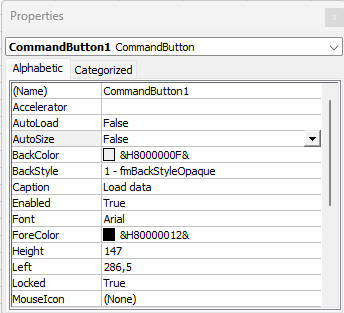
Double-click the button and you will be transferred to the Visual Basic editor and an empty routine:
Private Sub CommandButton1_Click()
End Sub
Fill in the routine you want to use (loadFromDatabase or saveToDatabase) with a given code or an empty string. The code given will load/save all the time series with the given code specified in the Data column in the Information to be shown for load and in the Store part for save.
An example for loading all time series with A and B:
Private Sub CommandButton1_Click()
Call Application.Run("loadFromDatabase", Me.Parent.Name, "A")
Call Application.Run("loadFromDatabase", Me.Parent.Name, "B")
End Sub
Or, if you want to display any messages from the routine:
Private Sub CommandButton1_Click()
Dim res As Variant
res = Application.Run("loadFromDatabase", Me.Parent.Name, "A")
If res <> "OK" Then
MsgBox res, , "Load from DB"
End If
res = Application.Run("loadFromDatabase", Me.Parent.Name, "B")
If res <> "OK" Then
MsgBox res, , "Load from DB"
End If
End Sub
Save the code and close the Visual Basic editor. Set the worksheet in normal mode again and the button is ready for use.
Add Excel AddIn for Mesh to an existing workbook
The FlexibleLoadStore can be added to an existing report by the following steps:
- Install Excel AddIn for Mesh (see earlier in this document)
- Add the LoadFromDB and SaveToDB worksheets to the existing report
- Set up the time series to read and present
Add the LoadFromDB and SaveToDB worksheets
To move/copy a worksheet from one workbook to another is standard functionality in Excel. Do as follows:
- Open the FlexibleLoadStore.xls
- Open the workbook where the worksheets will be copied
- Select the LoadFromDB worksheet
- Choose Edit > Move or Copy Sheet….
- Select Create a copy, select the workbook in the To book, select a sheet in the Before sheet list and choose OK.
- Repeat the copy procedure for the SaveToDB worksheet
It is not necessary to copy the SaveToDB sheet if you do not want to save data in the workbook.
Configure the Times series to report
See LoadFromDB worksheet and SaveToDB worksheet.
Updates to PowelAddIn.xls
New updates to PowelAddIn.xls are installed the same way as the first time. Remember to deselect the add-in in Excel, save the new version as an Excel Add-In and reselect as add-in.
Updates to worksheets
If the layout of LoadFromDB and/or SaveToDB worksheets is updated and the workbooks must be updated, the safest way is (to ensure the right named cells):
- Open the workbook to be updated.
- Rename the LoadFromDB and/or SaveToDB worksheets.
- Open the FlexibleLoadStore.
- Copy the LoadFromDB and/or SaveToDB worksheets into the workbook to be updated.
- Copy the information from the old worksheet to the new one, column by column.
- Delete the old worksheets.